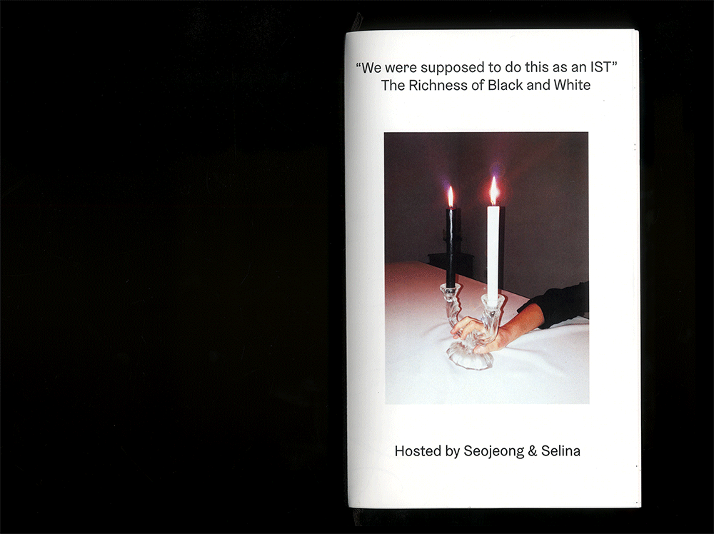

Seojeong Youn
Graphic designer and visual artist from Seoul, South Korea, lives and works in The Hague, The Netherlands. She finished her bachelor’s degree in Graphic Design at KABK, The Hague, The Netherlands in 2020. Her practice consists of combining various mediums
and explorations on different materials including printed-matters, ceramics, installations, digital and daily objects.
Internship at Studio Jan en Randoald
For any inquiries:
lyricyoon@gmail.com
00 33 6 26 45 52 52
In Paper Portrait, I address the pressing issue of the bureaucratic violence which non-EU citizens are subjected to everyday through the lens of my own personal experience. I developed my research through a variety of media, including performance, writing, and a community-supported web platform, deliberately navigating and mediating my material through an intersubjective poetic approach as well as through community design in order to take a collective stance against EU legislative governance. Come visit an ongoing photo series online platform and submit your paper portrait to build and unfold the longest paper.
paperportrait.xyz A series of clocks tell you the time. Makes you question what time is. 24 editions.
The Giant Floating Eyeball, Finance & Algorithms, a collaboration with Selina Landis and the Dutch Ministry of Finance. The installation is a mash between a therapist couch and the office chair. This kind of furniture was primarily designed to make it possible to work for eight hours in the same position: a tool for productivity. The office couch is combined with a chat bot called Eliza that was developed during the 60’s and works similar to person centered therapy. Visitors of could lye on it and talk her. Our version of Eliza contains parts of the reader we compiled, and would share points of view with the interlocutor. The work was fueled by a text called “How to heal a Depression” by Franco “Bifo” Berardi and our quest “Can an Algorithm be a Therapist?” We looked at mental depression and economic depression —the personal and the economic event as interrelated and not merely affecting the individual. We searched for symptoms and causes in our culture and compiled the reader with it. In the collected texts the working body, the work environment and work ethics are quite central.
The Giant Floating Eyeball
2019
A two sided poster for group exhibition “The Giant Floating Eyeball, Finance and Algorithms” in collaboration with Selina Landis and the Dutch Ministry of Finance. Hint to personal algorithms and the three newspaper editions issued with the exhibition.
Typefaces designed by Nedislav Kamburov & Edward July.
The Giant Floating Eyeball
2019
The three news papers for group exhibition “The Giant Floating Eyeball, Finance and Algorithms” in collaboration with the 3rd year graphic design students and the Dutch Ministry of Finance. The three newspaper editions issued with the exhibition.
Typefaces designed by Nedislav Kamburov & Edward July.
The era of modern polymath, we are master of all or none. The future belongs to the integrators. A mixed media work, Skill Portrait envisioning the business card of the future. Whilst leisure and work become more intertwined, each skill might become relevant for a future employment. Joining forces with Selina Landis we create an displaymethod to present our combined and expandable, rather crafty skills.
Personal Bowl of Hygieia
2019
We entered a brave new world where making any pill is as legal as drinking a cup of coffee. Customized chemical composition adapted to whatever your needs are, right there at home. The work is an exploration on the futuristic material and printing production and recontexualisation of existing images of future by experimenting print techniques with stencil using plaster on a wood plate.
A project we initiated together with Justus Gelberg and Vincent Rheinberger, we used a Google Chrome extension I made which gives users the opportunity to track the path of your mouse movement, while they surf through websites. With this tool, we brought the digital footprint onto stones which is one of the oldest materials were used as medium for communication. By translating impermanent like mouse movement on something permanent, it creates a contrast between the trace one leaves on a website and the fossilization or monumental registration of carvings in stone. The whole process was documented on videos installed as an installation.
Estwo Decor Showroom
2018
Estwo Decor is a leading manufacturer and distributor of architectural columns and decorative elements for home and outdoor founded together with Selina Landis. Ancient columns stayed for centuries and centuries, and so will the plastics. Estwo Decor produces columns representing the beautiful ruins through different kinds of food packagings and create new landscapes. The scaffolding showroom presents the elements are made out of high quality plaster together with a series of posters.
Estwo Decor Catalogue
2018
Estwo Decor is a leading manufacturer and distributor of architectural columns and decorative elements for home and outdoor founded together with Selina Landis. Ancient columns stayed for centuries and centuries, and so will the plastics. Estwo Decor produces columns representing the beautiful ruins through different kinds of food packagings and create new landscapes. The catalogue contains a collection of columns as well as the history of Estwo Decor.
The Richness of Black & White
2018
The Richness of Black and White is a project based on the topic ‘the richness’ in collaboration with Selina Landis. Not only is food rich and complex in it’s texture, smell, taste, origin, also the event of a differ is full of traditions, connotations and elements to design, all strongly related to spatiality. In this edition we approached the dinner rather traditionally, the table display and design layout are quite classy for western culture. This simplicity allowed us to focus on black and white, and how it manifested in different materials, shapes and tastes.
The Richness of Black & White
2018
The Richness of Black and White is a project based on the topic ‘the richness’ in collaboration with Selina Landis. Not only is food rich and complex in it’s texture, smell, taste, origin, also the event of a differ is full of traditions, connotations and elements to design, all strongly related to spatiality. In this edition we approached the dinner rather traditionally, the table display and design layout are quite classy for western culture. This simplicity allowed us to focus on black and white, and how it manifested in different materials, shapes and tastes. The publication is divided following the stages of a dinner. We consider our research and experimentation as an appetizer, the event that involves hosting and preparing as the main course and the conclusion and presentation as the dessert. We thank all our friends for the nice time and look forward to more dinners.


A series of type specimen publications focused on 10 different typefaces used in Asian vintage advertising and magazine covers. By replacing myself as a model and mimicked poses to promote typefaces, I established an archive of visual annotations to the list of fonts and redefined my typographic choice.
Beyond the sweetness and humour, mascots are a powerful tool for businesses to increase their profit and strengthen their identity. What if we were to use mascots to promote something that doesn’t have anything to do with profit or advertising? In comes the Time Mascot. We have all have an equal amount of time at our disposal, and we all know that we cannot physically possess it. The Time Mascot promotes time which we cannot buy. Isn’t it ironic though? Through promoting something that you cannot buy using mascots, you can buy their promotion products instead. This Time Mascot makes Time purchasable. Even though you cannot buy time itself, the mascot bring it into life. Riso-printed handouts spread to visitors at the exhibition.
Tools for Expression
2018
Alongside the printed page, written language is represented in various forms. Public space is illed with messages of all kinds written by the individuals that inhabit it. Through these interventions of self-expression, different forms of written and oral language have been born that go unaccounted for in the history of communication. Each of these methods has its own formal and conceptual qualities, as well as its own history and background. These tools represent an untold history of graphic design that has existed and developed alongside the popular communication tools of print publishing, radio, television and the internet.
TOOLS FOR EXPRESSION
2018
A series of posters for the exhibition Tools for Expression held at Quartair in Den Haag.
Flippo Typeface is made together with Selina Landis.
A series of posters for the lecture by the alumni, Jasmijn Muskens from Interior Architecture and Furniture Design department at The Royal Academy of Art, The Hague.
Before and AFter Throbber
2017
The world is now “Waiting To Be Beautiful”. Explore the journey of plastic surgery through the throbber.
Nujabes is a Japanese record producer, DJ and composer who I honor was presented in the immersive exploration of the ornamental divine after having taken a trip to Iran.
Notes to the interview Tabita Rezaire did herself about the digital healing activism of SENEB. Silkscreened foldable publication.
Catalogue for an exhibition The Prop Show curated by Bart de Baets. Seventeen props from movies like Love Actually and Memento, from Jurassic Park to The Virgin Suicides, are interpreted and brought to life. The Hand-out can be a helpful guide to find out all there is to know about the project.